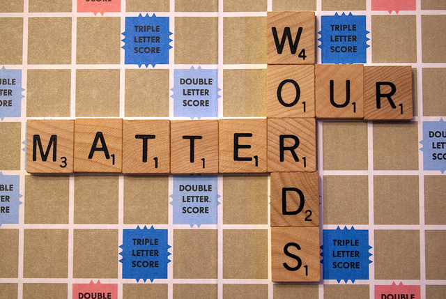

Terminology Matters

Learning
From this topic, I learned that the words we choose are very important because they show respect for people's identities, cultures, and histories. I now understand that using the correct terminology when referring to Indigenous Peoples is not only about being accurate but also about creating an inclusive and respectful learning environment. I also learned that some terms have a painful colonial history and should only be used in specific legal or historical contexts.
As an educator, this learning reminded me that my language influences how students think and speak about others. I want to model respectful language in my classroom, gently correct misunderstandings, and help students understand why the words they use matter.
Why I Selected This
This learning was meaningful to me because I learned that the words we choose are very important. They show respect for people's identities, cultures, and histories. It helped me understand that using respectful and accurate language is an important part of creating an inclusive classroom.
How I Will Apply This in My Classroom
- Use respectful and accurate terminology when referring to Indigenous Peoples.
- Model respectful language in everyday classroom conversations.
- Explain why using correct terminology is important.
- Gently correct students when incorrect or outdated terms are used.
- Choose classroom books and resources that use respectful and accurate language.
- Create a classroom environment where every student feels respected, valued, and included.